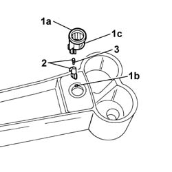

7065C73 cigar lighter bulb - r r - includes r r cigar lighter
- Path
- Procedures > 70 FITTINGS > 7065 SEAT BELTS AND ACCESSORIES > 7065C accessories and decorations > 7065C73 cigar lighter bulb - r r - includes r r cigar lighter
- Kind
- repair procedure (removal / refitting; the operation number is the code)
- Applies to
- all engines; all production periods
- Interactive page
- https://sloeber94.github.io/elrnDB-fPnd/en/#/2753326
Applies to: all engines; all production periods
 Removing
Removing
 Refitting
RefittingDisconnect the battery negative terminal.
7065C84 front power point housing - r r
1. Release the retaining (1a) from the housing (1b) and extract the ring nut (1c).
2. Extract the bulb holder with the bulb.
3. Extract the bulb, which is a press fit, from the bulb holder.

Applies to: all engines; all production periods
Refitting
RemovingInsert the bulb in the bulb holder.
Insert the bulb holder in its seating.
Fit the ring nut in position and check that it is securely fitted.
7065C84 front power point housing - r r
Connect the battery negative terminal.